Your servers,
in your pocket.
Nautile is a free SSH, Mosh and remote-desktop client for Android, now on your computer too: a real terminal, SFTP, tunnels, snippets and encrypted sync between your devices. No cloud, no account: your hosts, keys and passwords stay encrypted with you.
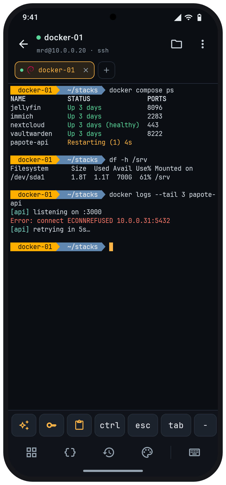
Made for a phone
Big touch targets, a key bar for what the keyboard lacks, and everything one tap away: connect, reconnect, open files, run a snippet.
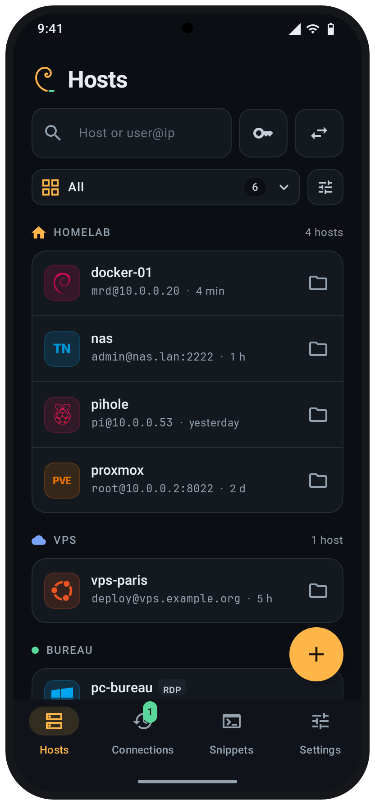
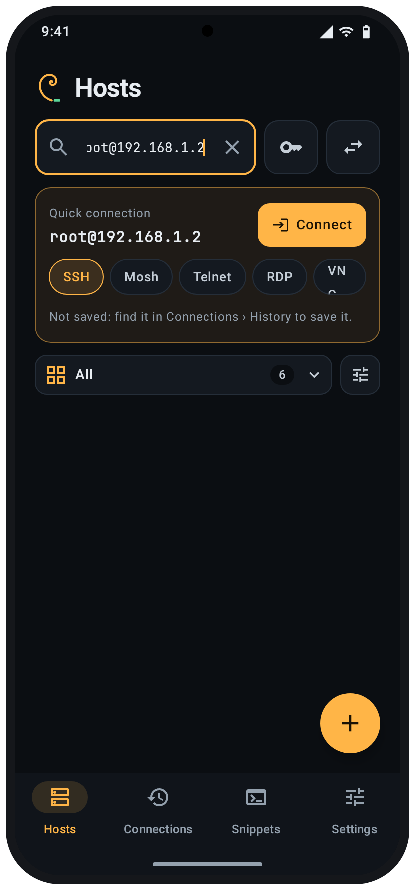
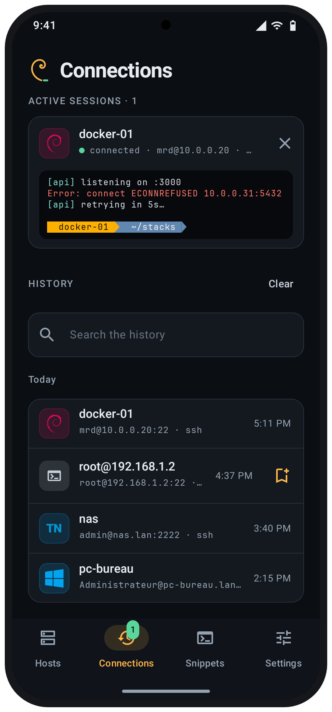
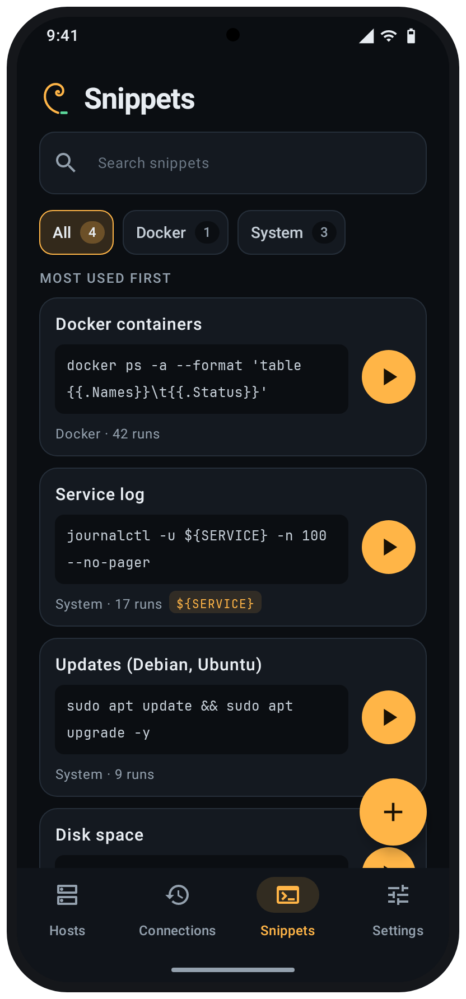
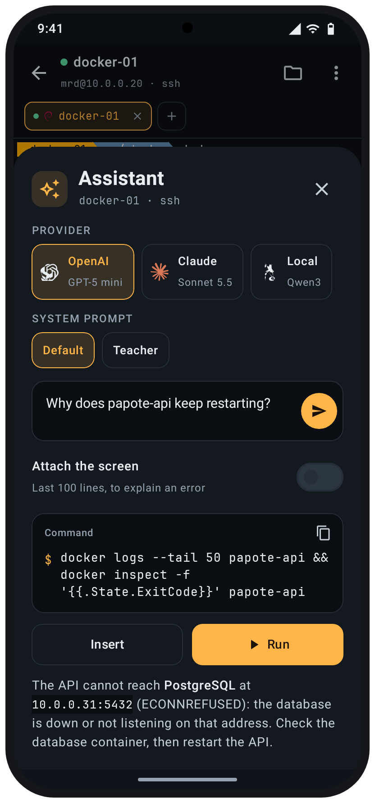
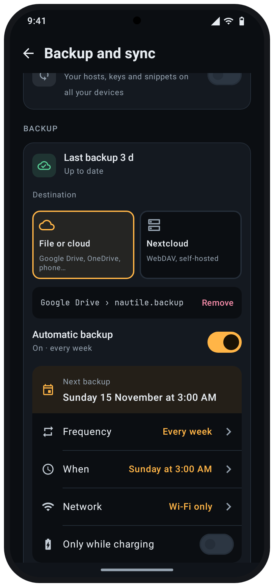
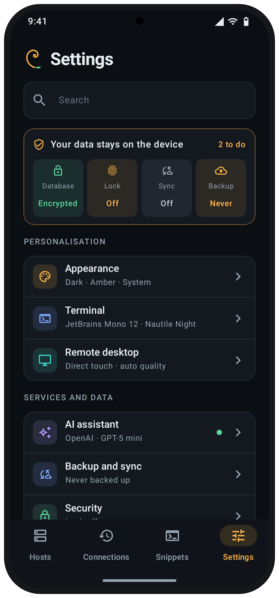
Also on your computer
A native app for Windows, Linux and macOS (written in Rust, about 35 MB of RAM) with the phone's look and settings. It reads the phone's backups and stays in step with it, through a shared file or straight over Wi-Fi.
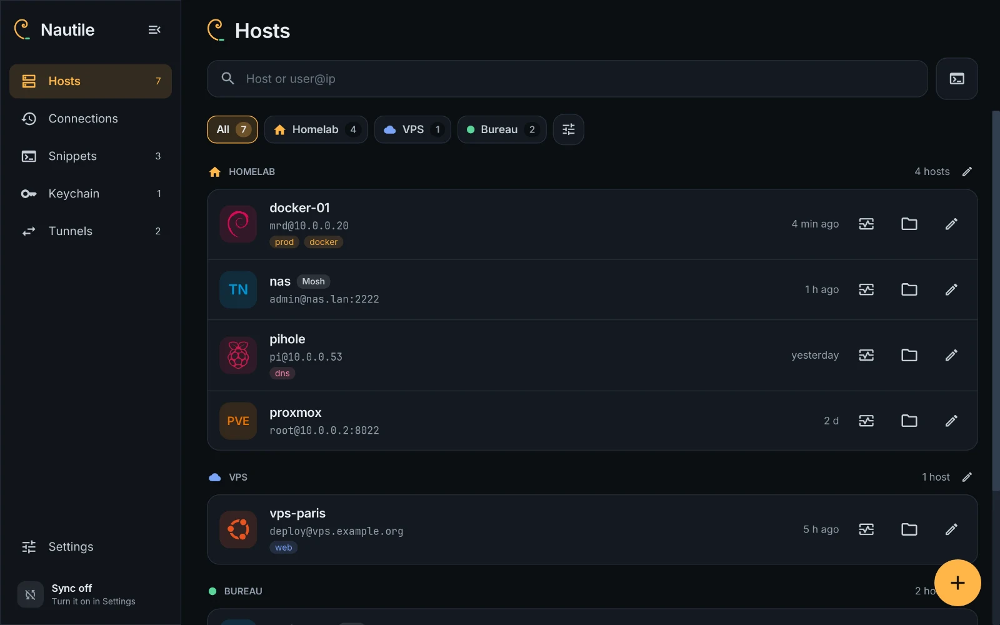


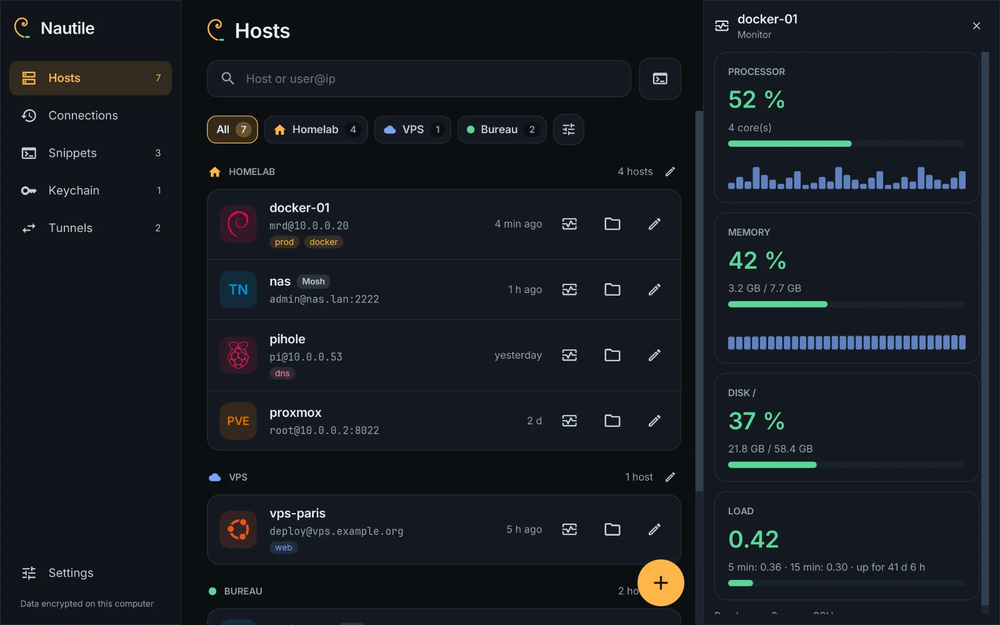
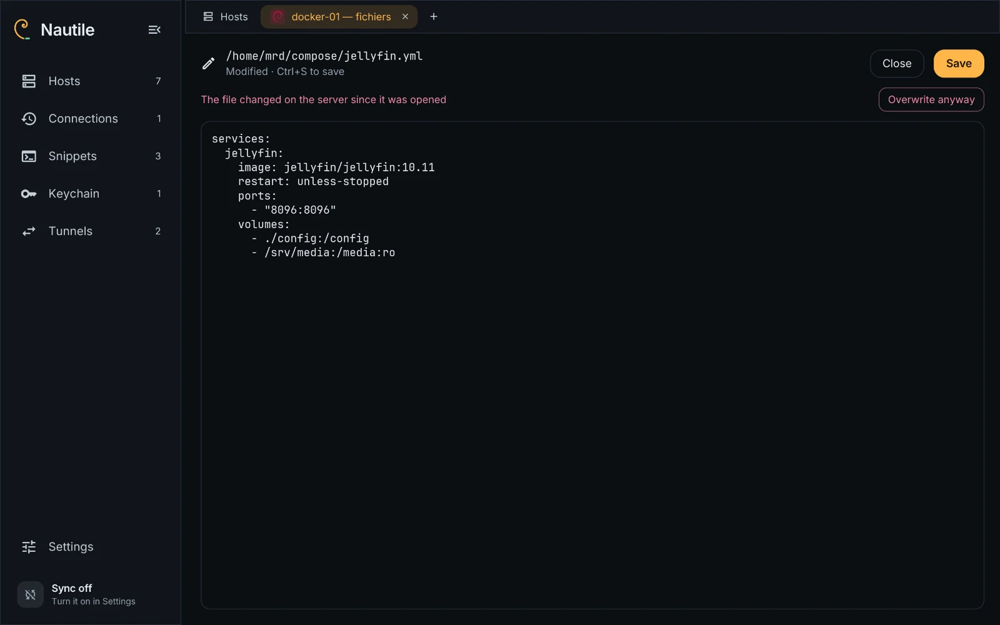
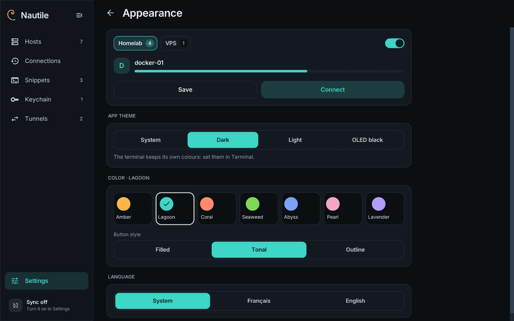
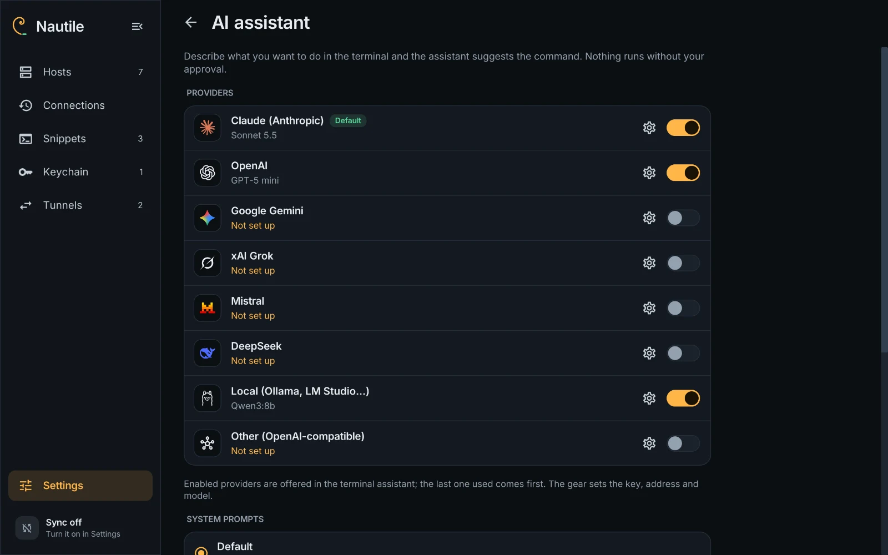
- Lives in the notification areaClosing the window keeps sessions, tunnels and sync running. Starts with the session if you want.
- Made for the keyboard and mouseCtrl+K, Ctrl+N, Ctrl+1…9, right click on a host, drag a host onto a group or a tab elsewhere.
- Same data as the phoneHosts, keys, identities, snippets and tunnels synced both ways; a phone backup restores here as it is.
- Bring your hostsImport
~/.ssh/configor a CSV, with groups, jump hosts and keys. Or typeroot@192.168.1.2in the search. - Sync that waits for your VPNIs your Nextcloud or S3 private? Sync waits for WireGuard, Tailscale or OpenVPN, then goes, on the computer and the phone.
- Updates from the appIf you allow the check at first launch, a new version shows up at start, with its notes; it is downloaded, checked against its checksum and installed in one click.
Download for your computer
setup.exe installer, no administrator rights · or portable.zip
Linux.deb (Debian, Ubuntu) · .rpm (Fedora, openSUSE) · .tar.gz
macOS.dmg, not notarised yet: open it once, then System Settings › Privacy & Security › Open Anyway
The Windows files are not signed yet: SmartScreen shows « Windows protected your PC » › More info › Run anyway. Checksums are in SHA256SUMS-desktop.txt.
Everything you need on the go
What you use daily on a laptop, rethought for a touch screen.
A real terminal
xterm-256color, tabs and split screen, pinch to zoom, a key bar you arrange, 10 themes and 5 Nerd Fonts (or your own).
SSH done right
Keys and identities, agent forwarding, ProxyJump, SOCKS5/HTTP proxies, port knocking and host-key pinning. Mosh, Telnet, USB serial and local shell too.
Remote desktop
FreeRDP 3 inside: NLA, hardware H.264, sound, clipboard, direct touch or touchpad, through an SSH tunnel if needed. VNC too, for Linux, macOS and Raspberry Pi.
Quick connection
Type root@192.168.1.2 in the search bar and connect without saving. Find it later in the history, ready to be saved.
Files, tunnels, snippets
SFTP with background transfers and remote editing, -L/-R/-D forwards, saved commands with variables run on several servers at once.
Encrypted sync and backup
Keep phones, tablets and computers in step through Google Drive, OneDrive, Nextcloud, S3 storage or a Syncthing folder, or straight over Wi-Fi; it can wait for your VPN. Backups at the time and on the network you choose, the last five kept. Encrypted before it leaves.
AI assistant, your way
Claude, OpenAI, Gemini, Grok, Mistral, DeepSeek or a local model, with your own key and system prompts. Type or dictate, attach the screen or a config file, follow up, export as Markdown.
Sessions at a glance
Live previews of open terminals and desktops, a searchable history with OS logos, and a confirmation before closing a session.
Private by design
Nautile has no server and collects nothing. No data leaves without your consent; the update check, if you accept it at first launch, contacts GitHub once a day.
- SQLCipher database, its key kept in the Android Keystore (on a computer: the system keyring).
- Lock by biometrics, PIN or password with a re-lock delay, hidden from recent apps if you want.
- Backups and sync are encrypted on the phone (Argon2id + AES-256-GCM) before going to the storage you chose.
- The optional AI assistant uses your own key and only sends your question, the host's address and what you attach (the terminal screen, files).
- After a crash, an anonymised report you can read, then post on GitHub yourself. Nothing is sent otherwise.
Install Nautile
Free for Android 8.0 and newer, in English and French. On a computer, see the desktop downloads.
- Download the APK
arm64-v8afor almost every recent phone,armeabi-v7afor older ones, the universal APK if unsure. - Open it on your phoneAllow the installation from your browser or file manager.
- Add a host, or just type oneTap + and pick SSH, RDP, Telnet, serial or local, import your ~/.ssh/config, or type user@address to connect right away.
Every release is signed with the same key. Package com.nautile, certificate SHA-256: